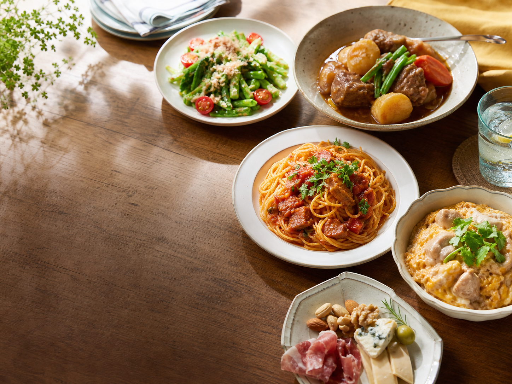
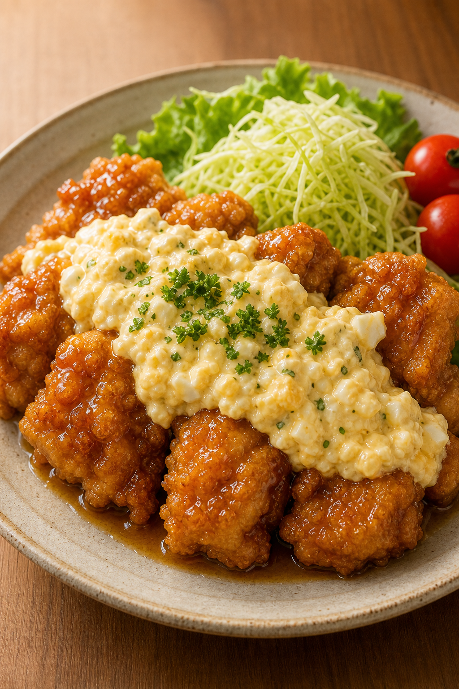
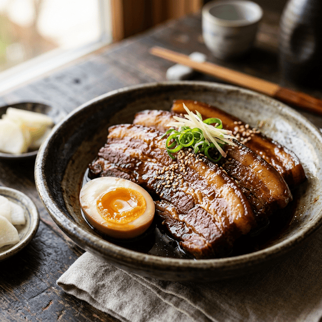
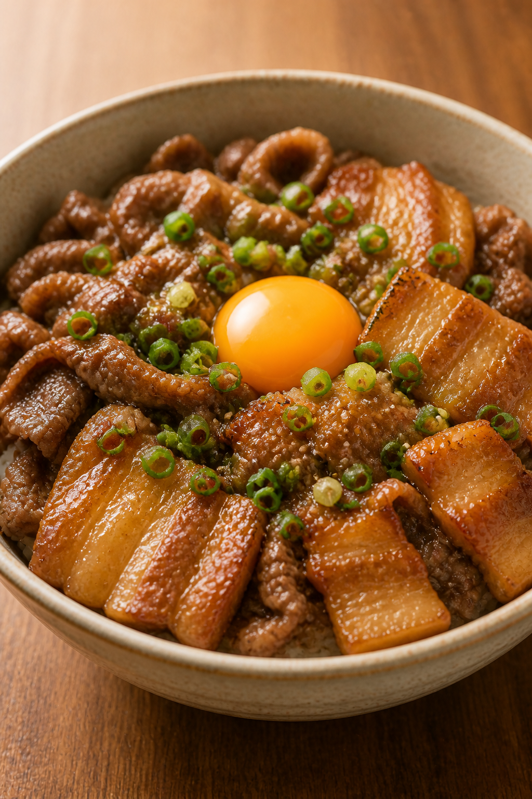

Recipe List
食べたい気分で選ぶ。
迷ったら、今の腹具合に近いものから。
01
気分タグ
全部
ガッツリ
さっぱり
疲れてる
酒飲みたい
02
レシピ
7件
該当するレシピはありません。
今日の自分、よくやった
濃厚うにクリームパスタ
20分
★★★☆☆
780 kcal
夜遅めでも軽く満たす
ふわっと海老の豆腐まんじゅう
25分
★★☆☆☆
360 kcal

仕事終わりにガツンと
しっとり甘だれチキン南蛮
25分
★★★☆☆
1650 kcal

じっくり自分を労う
じっくり煮込む極上豚の角煮
3時間〜
★★★★☆
1580 kcal
ガッツリ食べたい日
びくどん風ハンバーグ
30分
★★★☆☆
1320 kcal
揚げ物って幸せ
究極のからあげ
30分
★★★★☆
1550 kcal

白米を主役にしたい
叙々苑風 牛豚丼
20分
★★★☆☆
820 kcal